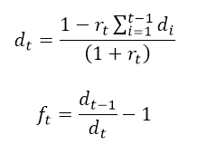

The US Treasury Yield curve currently has an interesting pattern based on 10 year data where there is definite flattening of the yield curve with one year rates rising rapidly. Long term yields embed(*) future expectations of short term interest rates, suggesting that rates in the future will be low. With short term rates rising currently, a straight-line projection should indicate that long term yields will rise also. Since that is not happening, the counter-intuitive reasoning is possibly that current high rates will depress future economic growth. (Data Source: US Federal Reserve).
*Bootstrapping of interest rates is a method used to price fixed rate and floating rate instruments consistently. In this methodology the discounted sum of bond coupon payments equals the discounted sum of the expected short tem interest rates. In fixed income analytics, using annual time periods,
Where d(t) is the discount factor at time t, r(t) is the annual coupon rate for a bond with t years to maturity, and f(t) is the expected future one year interest rate at time t.